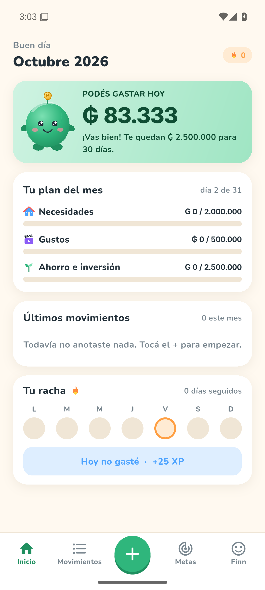
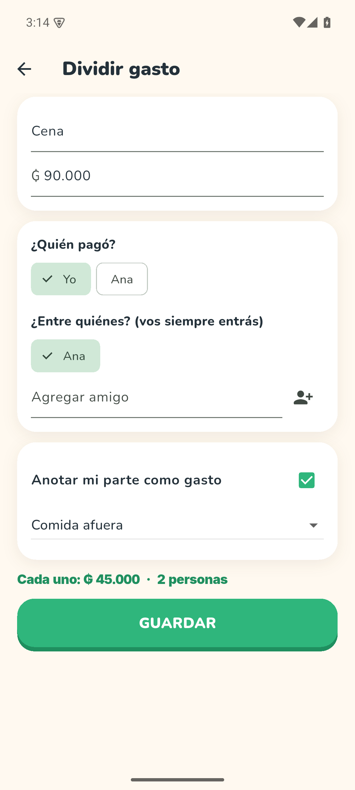
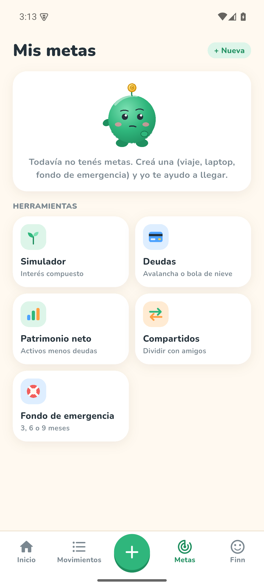
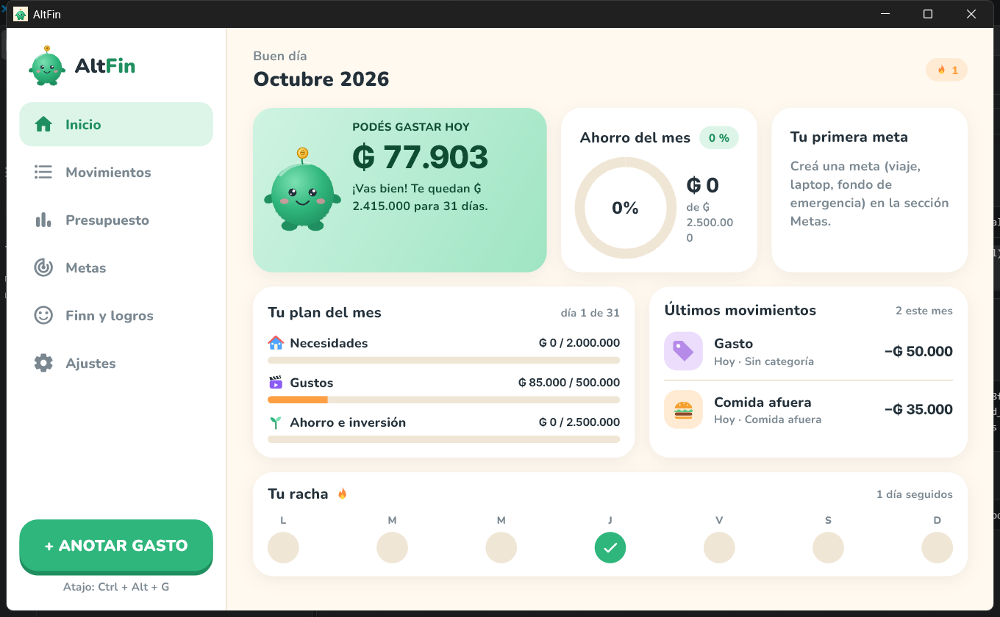
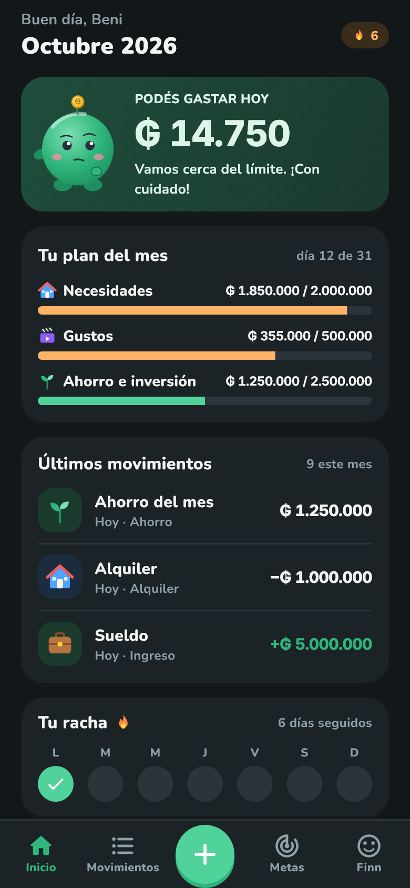
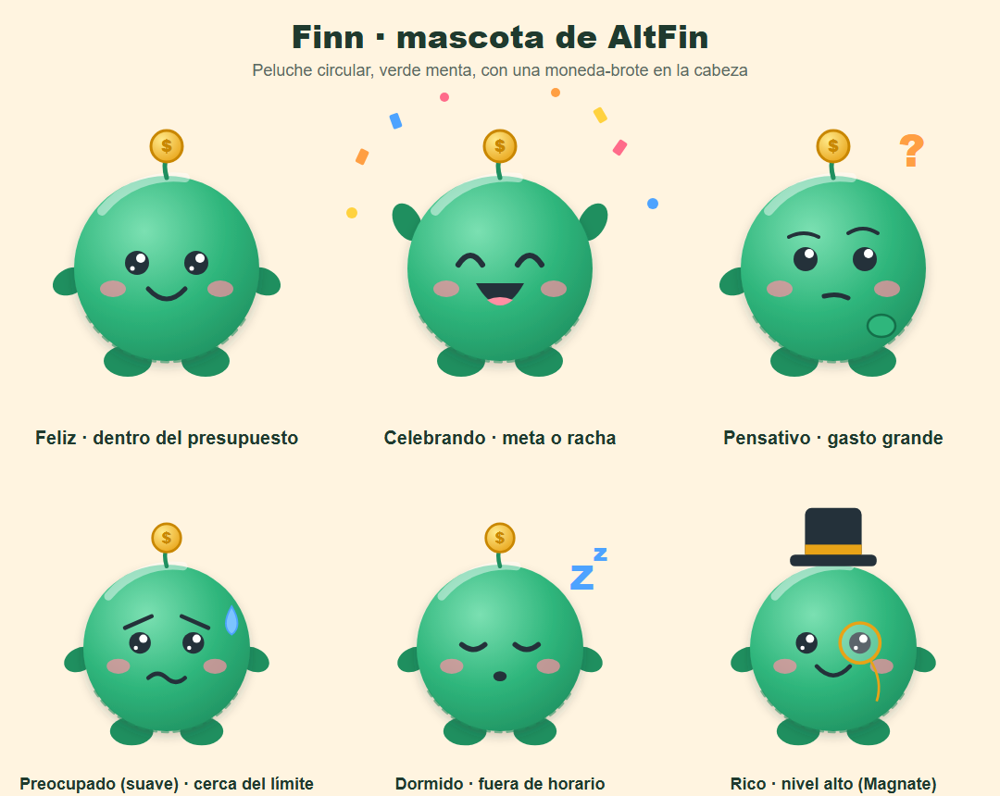

Podés gastar hoy
Un solo número, calculado con tu sueldo, tus gastos fijos y los días que faltan. Sin planillas.
Alfa · gratis · código abierto
Mirá cuánto podés gastar hoy, ahorrá sin pensar y juntá logros con Finn. Sin cuentas, sin internet, sin que nadie vea tus datos.
Android · Windows

Qué hace
Un solo número, calculado con tu sueldo, tus gastos fijos y los días que faltan. Sin planillas.
Monto, categoría, listo. En PC, con Ctrl+N.
Te dice cuánto ahorrar por mes y si vas bien.
7 días sin comer afuera. Se evalúan solos y dan XP.
Dividí la cuenta entre amigos, mirá quién le debe a quién y anotá solo tu parte.

Anotá un gasto desde la pantalla de inicio de tu Android.
Plan avalancha o bola de nieve, y cuánto valés de verdad.
Todo vive en una base de datos en tu dispositivo. Bloqueo con PIN, copia de seguridad en un archivo tuyo y exportación a CSV.
Un diseño, dos pantallas



Modo claro y oscuro. Panel de varias columnas en pantallas anchas.
Conocé a Finn
Finn cambia de ánimo según tu presupuesto: feliz si vas bien, preocupado cerca del límite, festejando cuando cumplís una meta. Subí de nivel, juntá racha y desbloqueá insignias.
Sin emojis, sin presión: solo un compañero.

Descargas
Cargando versiones…
Cómo instalar
Va firmada con una clave de prueba: para pasar a una versión nueva hay que desinstalar la anterior. Hacé antes la copia de seguridad en Ajustes.
Windows puede avisar que el editor es desconocido: la app es libre y su código está abierto.
Podés ver todo el código, compilarlo vos mismo o comparar el archivo con el que genera GitHub Actions. Está en GitHub.
AltFin está en alfa: puede haber errores. Hacé copias de seguridad.